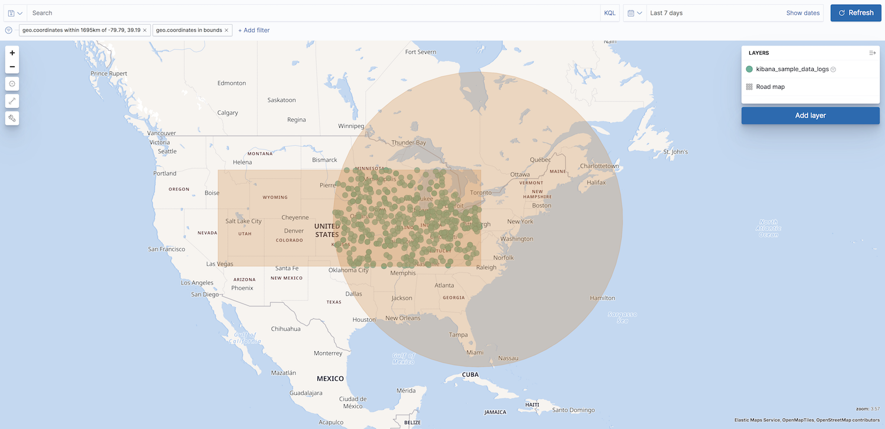

Configure map settings
editMaps offers settings that let you configure how a map is displayed. To access these settings, click Settings in the application toolbar.
Custom icons
editAdd, edit, or delete custom icons for the map. Icons added to the map can be used for styling Point features.
Display
edit- Background color
- Set the map background color.
- Show scale
- When enabled, display the map scale.
Navigation
edit- Auto fit map to bounds
- When enabled, the map will automatically pan and zoom to show the filtered data bounds.
- Zoom range
- Constrain the map to the defined zoom range.
- Initial map location
-
Configure the initial map center and zoom.
- Map location at save: Use the map center and zoom from the map position at the time of the latest save.
- Auto fit map to bounds: Set the initial map location to show the filtered data bounds.
- Fixed location: Lock the map center and zoom to fixed values.
- Browser location: Set the initial map center to the browser location.
Spatial filters
editUse spatial filter settings to configure how spatial filters are displayed.

- Show spatial filters on map
- Clear the checkbox so spatial filters do not appear on the map.
- Opacity
- Set the opacity of spatial filters.
- Fill color
- Set the fill color of spatial filters.
- Border color
- Set the border color of spatial filters.